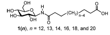
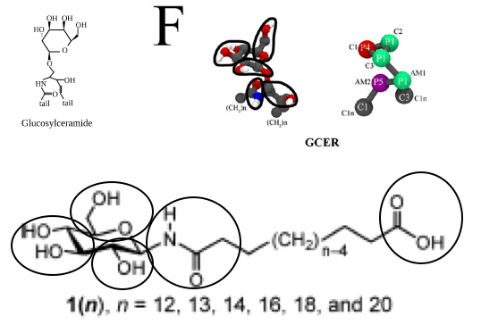
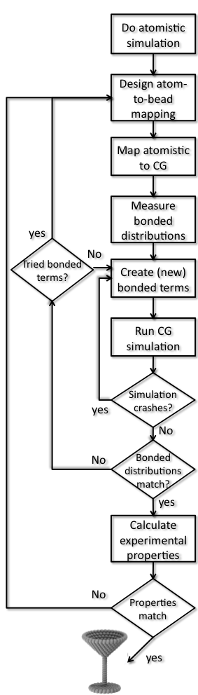

Parametrizing a new molecule
The material offered in this page is LEGACY material. This means that it either pertains to older iterations of the Martini force field and/or that it is no longer actively supported. However, this does not mean that there aren’t cool things to be learned here! Have a look! If you are looking for the current iterations of the Martini force field lectures or hands-on tutorials, click here to go back!
Parametrizing a new molecule based on known fragments
In this part of the tutorial, we will discuss how to build a Martini topology for a molecule that consists of known fragments, but was not previously described. The model will then be used in a self-assembly simulation to assess its behavior. Refinement of the model is not attempted. If you feel the need for refinement, consult the second part of this tutorial (where the procedure is described for another molecule), or similar refinement procedures that are part of the lipid and polymer tutorials, respectively.
Suppose you got all excited about a class of molecules that are asymmetric bola-amphiphiles, and more in particular the types of molecules shown in Figure 1 below, taken from Masuda and Shimizu, Langmuir 20, 5969 (2004). These molecules have hydrophilic groups at both ends of the chain, but they are distinctly different in size, one being a relatively large glucose ring, the other a relative small carboxylic acid. These molecules self-assemble in tubes whose diameter depends on the length of the linker, as described by Masuda and Shimizu. You recognize chemical groups that are not too far from standard lipid and/or protein components, and so it is quite likely that the building blocks themselves should be available in the Martini force field. Indeed, Martini does also treat proteins and sugars and glycolipid simulations and parameters have been published.

Unfortunately, it appears the molecule you are interested in, is not a glycolipid as published but has a different connectivity. You need to implement this molecule yourself! However, you may use existing building blocks as much as possible. Below, we explain how to go about this.
The first step is therefore to split the molecule in reasonable building blocks. This is sometimes referred to as a mapping (from atomistic to coarse-grained representations). If you consider the chemical nature of the molecular fragments and the existing Martini models for glycolipids and proteins, you may come up with an 8-bead model for the molecule with a linker of 12 C-atoms (n=12 in Figure 1). It may be useful to make a drawing showing which atoms you group into which bead, showing the bead type, as in e.g. the Martini glycolipid paper cited above. A reasonable mapping based on the glycolipid GCER is shown in Figure 2. GCER is representative of both glucosyl- and galactosylceramide; the structure of galactosylceramide can be found in more detail for example on Wikipedia. Although GCER has an amide group, it is connected via an ether linker in GCER, whereas it is directly attached to the sugar ring in our lipid, so we will need to come up with different bond and angle parameters, but the mapping scheme seems reasonable.

Let us call the new molecule GDAL (for glucose-dodecane-acid-lipid). You can probably think of a much better name, but this is the name that will be assumed in the following…
You will need to write a topology file for the molecule. You may start from scratch, or you may take an existing file and edit it. A good candidate may be the GCER lipid. GCER itself is just the name of the head group linked to a ceramide; if we look in the Martini lipidome, we find a ceramide lipid, DPGS, with two tails, that may well be useful as a template. Some part of the .itp file is shown here:
[ moleculetype ]
DPGS 1
[ atoms ]
1 P4 1 DPGS C1 1 0 72.0000
2 P1 1 DPGS C2 2 0 72.0000
3 P1 1 DPGS C3 3 0 72.0000
4 P1 1 DPGS AM1 4 0 72.0000
5 P5 1 DPGS AM2 5 0 72.0000
6 C3 1 DPGS D1A 6 0 72.0000 ; corrected (C3 instead of C1), oct 2013
7 C1 1 DPGS C2A 7 0 72.0000
8 C1 1 DPGS C3A 8 0 72.0000
9 C1 1 DPGS C4A 9 0 72.0000
10 C1 1 DPGS C1B 10 0 72.0000
11 C1 1 DPGS C2B 11 0 72.0000
12 C1 1 DPGS C3B 12 0 72.0000
13 C1 1 DPGS C4B 13 0 72.0000Based on other lipid mappings and the connectivity lower down in the file, and the drawing in Figure 2, beads 1-3 are the glucose ring particles, bead 4 is the connection to the glycerol parent of the lipid, bead 5 is the amide, and the other beads are the tails. We should connect bead 5 to bead 3 instead of bead 4 as is done in DPGS, then keep the tail connected to bead 5, which are beads 10-13. Based on 12 CH2-groups, the original bead 13 will be the carboxylic acid end bead. This means all assignments can stand, except that for bead 13, which instead of C1 should probably best be P3. This assignment is based on the Martini 2007 paper, where P3 is representative of acetic acid. So, the first step is to copy the DPGS file, rename DPGS to GDAL, remove beads 4-9, change the type of bead 13 from C1 to P3 and renumber the remaining beads. Before renumbering, perhaps it is best to remove all lines in the [ bonds ], [ angles ], and [ dihedrals ] sections that involve the original beads 4-9. Now the renumbering can be done by changing all entries 5 to 4, 10 to 5, etc. Automatically, the bonded parameters are preserved. There is one thing we need to fix, and that is the bonded parameters around the old bead 5, the new bead 4. The ring bead-amide distance, and ring bead-amide-hydrocarbon angle should be given reasonable values. What are these? The moiety itself is fairly rigid, so the angle around the amide is likely something like 180 degrees, with reasonably high force constant. The ring bead-amide distance may be close to the backbone-backbone distance in proteins. You can look these up in the Martini publications.
Now you have a topology. You can download also the coordinates for DPGS, remove beads 4-9 and use those coordinates for a minimization in vacuum. This coordinate file can then be used to partly fill an empty simulation volume with randomly placed molecules. Water may be added, 10% of the water may be made into anti-freeze water, and a self-assembly simulation may be run as in the lipid tutorial.
If you’ve done all that, you may want to have a look at how one of us did it by downloading this archive. 200 molecules certainly like to form a bilayer, but it does not appear all that bent, maybe because the different head groups not separated on the different sides of the amphiphile layer as proposed by Masuda and Shimizu. This may again be due to the limited number of molecules, the periodic boundary conditions and/or some of the parameters, or much longer relaxation times being required to allow the lipids to flip-flop. This is where the fun starts! You are free to change interaction strengths one level up or down, which means you could test different bead assignments. It may be useful to check whether a single molecule in water has the correct flexibility by running an atomistic simulation and performing the mapping. A similar procedure is shown below for toluene and elsewhere in the lipid and polymer tutorials. Have fun!
Parametrizing a new molecule based on atomistic simulations
In this part of the tutorial, a how-to is shown to create a Martini topology for a molecule that has not been parametrized before. The procedure is highly dependent on the chemical structure of the molecule and what (experimental) data is available for your molecule. In this example we use a small molecule, toluene, for which an atomistic topology and water-octanol partitioning data (LogP) is available (2.73 from http://dx.doi.org/10.1021/ci050282s). The tutorial assumes you have general experience with the Martini force field (if not, try the other tutorials on this webpage), experience with Gromacs (if not, check the Gromacs-pages and thThe final step should say: “World Victory!”e tutorials mentioned there) and experience with a text editor. There is another tutorial for parameterizing a simple polymer, PEG, and another for refining lipid parameters based on atomistic simulations. Have a look at those for related approaches.
1) Generate atomistic reference data. For most reliable parametrization, atomistically simulate the molecule in solution. Martini has mostly been based on Gromos, but you can use any force field you like. If no topology exists you could use the ATB or the GAFF force field to construct one (this might be quite some work as well). Alternatively, if other people have published results with atomistic resolution for the molecule in question, you may rely on this data as reference material. 
The choice of solvent is of importance: The molecule might behave differently in aqueous or apolar solvents and the CG model might not be able capture both equally well. Choose a solvent comparable to the environment where the molecule will spend most of its time. If both environments are important, you may choose to compromise and get the best of two worlds.
For toluene you can run the simulations using (click on the files to download):
gmx grompp -f gromos.mdp -c gromos.gro -p gromos.top -o gromos
gmx mdrun -v -deffnm gromosThis lets you do a simulation of a single toluene molecule in decane as a solvent. Notice that the 1 ns simulation time used in the example is enough because toluene is such a simple molecule.
2) Choose an atom-to-bead mapping. This is the heart of “Coarse Graining” and relies on experience, chemical knowledge and trial-and-error. My favorite method: Draw your molecule on paper, copy it 10 times and start drawing and trying: It’s just like primary school. There are no hard rules but here are some tips you could use:
You have to use the beads in Table 3 from the original Martini paper. Find chemical sub-structures in your molecule that match the example fragments in that table. Don’t worry about bonds/angles/dihedrals between the beads yet.
Split the molecule in blocks of aproximately 4 heavy atoms. For planar or ring structures or when 4 atoms simply don’t fit use S-beads. Remember that S-beads only have a small radius compared to other S-beads and will thus have the same partitioning free energy (between water and octanol) as normal beads. For example one SC3 bead in P4 solvent (water) will behave exactly as a C3 would.
Don’t use partial charges. Except for fully charged molecules, Martini beads are neutral (exceptions could be made for strongly delocalized charges as found in metal ligands, for instance). For charges use the ‘Q’-type beads.
Compare to existing Martini topologies. Your molecule might contain chemical structures that do not appear in Table 3. But maybe someone else already tackled that problem, for example in proteins, sugars, etc.
Respect the symmetry of the molecule, and use the same beads for the same chemical groups within one molecule.
3) Generate coarse-grain mapped trajectory from the atomistic simulation. Using your just created mapping, transform the simulation you did at 1) to CG resolution. There are many ways to do this: you can use the transformation tool backward.py; an alternative and in some cases simple method is to create a Gromacs index file where every index group stands for a bead and contains the mapped atom numbers. Before you do that, you should realize that the molecule you are interested may be split by the periodic boundary conditions in one or more frames in the trajectory file (here gromos.xtc). To remedy this, you should first convert your atomistic trajectory to make molecules whole and then do the mapping. In this case, we are interested only in toluene and can reduce disk usage by only writing out the toluene coordinates, selecting only toluene as output. Put the mapped trajectory in a separate directory, for example MAPPED. For toluene run:
mkdir MAPPED
echo 2 | gmx trjconv -s gromos.tpr -f gromos.xtc -pbc whole -o whole.xtc
seq 0 2 | gmx traj -f whole.xtc -s gromos.tpr -oxt MAPPED/mapped.xtc -n mapping.ndx -com -ng 3
where 3 is the number of CG beads in your molecule and the 'seq 0 2' avoids having to type all index groups. Inspect the file mapping.ndx to see how the atoms of toluene are grouped into the CG beads.4) Create the CG itp file for the molecule of interest. This has to be done by hand, although some copy-pasting from existing itp files might help to get the format right. The different directives you (probably) need are:
[ moleculetype ]: One line containing the molecule name and a number of exclusions. For Martini the standard is 1.[ atoms ]One line per atom, containing atomnumber, beadtype, residuenumber, residuename, atomname, chargegroup, charge. Residue number and residue name will be all the same for small molecules. Atomname can be freely chosen. In Martini every bead has its own charge group. Charge can be 0,1 or -1. Mass is usually not specified and in that case is taken from the bead definition.[ bonds ]One line per bond, containing atom 1, atom 2, function, average length, force constant. The functional form for Martini is 1. Bond length can be set to the average length obtained in step 4. The force constant should be adjusted to the width of the obtained histograms: small width means high force constant and visa versa.[ constraints ],[ angles ],[ dihedrals ], see the gromacs manual for the right format.
5) Create CG tpr file. Extract one frame from your trajectory (mapping it of course) and use it to create a tpr file for your molecule(s) of interest. We need this .tpr file to generate the distributions of the bonds, angles, and dihedrals from the mapped trajectory. Create a top file (include the general martini itp files and the newly created molecule itp and add the right number of molecules (just one toluene in this case)). Create or download a Martini mdp file (see examples on the website). Put the cg.top, minimization.mdp, and martini files in a separate directory (the MAPPED directory already created):
seq 0 2 | gmx traj -f whole.xtc -s gromos.tpr -oxt MAPPED/toluene.gro -n mapping.ndx -com -ng 3 -e 0
cd MAPPED
# [define your own cg.top defining the toluene molecule or including it as an itp .
# You also need an general martini force field file, e.g. martini_v2.0.itp (here version 2.0 is used), and an mdp file]
gmx grompp -f minimization.mdp -c toluene.gro -p cg.top -o cg.tpr -maxwarn 16) Generate target CG distributions from the CG mapped trajectory. Go back to the drawing table and identify between which beads there should be bonded interactions (bonds, constraints, angles, proper and improper dihedrals). Measure the length/angle of these interactions in you mapped-to-CG atomistic simulations from step 3 (mapped.xtc). To do this, create index files for bonds with a directive for “[bonds]” containing (multiple) pairs of CG beads; for angles, “[angles]” containing triples; and for dihedrals, “[dihedrals]” with quartets. Write scripts that generate distributions for all bonds, angles, and dihedrals you are interested in. For toluene, there are three bonds and three angles (around the triangle). The index files bonds.ndx and angles.ndx as well as a bash script DOBONDEDANALYSIS.sh to generate all distributions are available as an example of how to do this. You may of course use your favorite scripting tool (e.g. python) . Finally, you can also do it by hand, just one example:
echo 0 | gmx distance -s cg.tpr -f mapped.xtc -n bonds.ndx -oall bond_0.xvg
gmx analyze -f bond_0.xvg -dist distr-bond_0.xvg -bw 0.001
gmx angle -f mapped.xtc -n angles.ndx -ov angle_0.xvg -type angle
gmx analyze -f angle_0.xvg -dist distr-angle_0.xvg -bw 1.0To do all analysis by the script type:
./DOBONDEDANALYSIS.shIn some cases it might be sufficient to calculate the average and standard deviation for all the distributions, however the distributions might be bimodal and it is always wise to inspect the distributions! If you used the script, you now have the target distributions in the directory BONDDISTRIBUTIONS and the angles in the directory ANGLEDISTRIBUTIONS. Using xmgrace for the angle distributions, type:xmgrace ANGLEDISTRIBUTIONS/dist*.xvgThese are the distributions you want to reproduce as well as you can. If they are nicely unimodal, you can take the average value as the parameter for the bond distance and bond angle, respectively, in your first martini topology, with some reasonable guess for the force constants.
7) Create CG simulation. Extract one frame from your mapped trajectory and solvate it in the same solvent as the atomistic simulation. Create a top file (include the general martini itp files and the newly created molecule itp and add the right number of molecules (solute and solvent)). Create a Martini mdp file (see examples on the website). Simulate the initial form of the CG molecule (you probably will have to energy minimize and maybe relax for a few thousand steps at a smaller timestep, e.g. 5fs). [You can prepare files yourself and gather them from the Martini site, or you can download the itp files martini_v2.0.itp, martini_v2.0_solvents.itp and martini_toluene.itp, and take it from there.] It may be wise to create a separate directory for the CG system, for example take1.
cd ..
mkdir take1
cd take1
[prepare/collect your files here]
gmx grompp -f minimization.mdp -c martini.gro -p martini.top -o minimization
mdrun -v -deffnm minimization
gmx grompp -f relax.mdp -c minimization.gro -p martini.top -o relax
mdrun -v -deffnm relax
gmx grompp -f md.mdp -c relax.gro -p martini.top -o md
mdrun -v -deffnm mdIn this simulation measure the bonded interactions similar to what you did in step 6 for the mapped trajectory. You can use the same index file and script. As it stands, you also need to copy the bond and angle index files. You may be able to think of more economical ways to use the script.
cp ../MAPPED/DOBONDEDANALYSIS.sh
cp ../MAPPED/bonds.ndx .
cp ../MAPPED/angles.ndx .
echo 2 | gmx trjconv -f md.xtc -s md.tpr -pbc whole -o mapped.xtc
./DOBONDEDANALYSIS.sh8) Optimize CG bonded parameters. In step 7 two things might happen: The simulation finishes and you obtain distributions or the simulation crashes. In the first case, you can compare the distributions to the ones obtained in step 6 and repeat step 7 after adjusting the parameters in the itp to obtain better distributions. It may be wise to make a fresh directory for each attempt (e.g. take2, take3, etc.). Too wide distributions mean you’ll need higher force constants, averages being off means you need to shift, etc. If the simulation crashes you will also have to go back, now with the aim to make the molecule more stable. This often means lowering force constants, removing uncessesary dihedrals or changing constraints to bonds or vice versa. Some common source of instability are:
- If a (proper) dihedral is defined over 4 atoms and the angle between 3 atoms is very wide (close to 180 degrees) this may lead to heavy fluctuations and crashes. You’ll might have to remove the dihedral or use special types of dihedrals.
- In ring like structures beads might be connected in triangles. If constraints are used between those beads, LINCS might not be able to solve them.
- Three beads, a,b and c, are linearly connected with short, weak bonds, bead b will be excluded from a and c. If a and c strongly attrack each other, a or c might start overlapping with b.
Repeat until you’re happy with the result, then move to the last step.
9) Compare to experimental results. Partitioning free energies (we are currently working on a tutorial explaining how to efficiently calculate those for Martini molecules) are particularly good, but for pure liquids also densities can be used or any other experimental number you can lay your hands on.